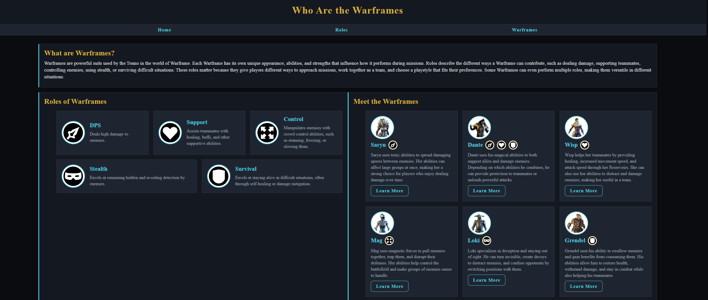
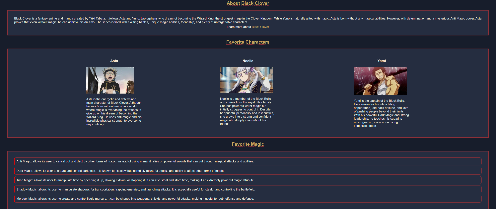

My Work
This page showcases some of the projects I've completed throughout my coursework. Each project gave me an opportunity to explore web development, practice my skills, and create websites based on some of my personal interests.
Warframe Website

This project focuses on Warframe, a free-to-play action game. The website introduces Warframes and explores five different roles they can fill: survival, support, stealth, damage, and crowd control. It also features several Warframes and explains their roles within the game.
View the Warframe WebsiteBlack Clover Website

This project is based on the anime and manga series Black Clover. The website introduces the series, highlights some of my favorite characters, and explores different types of magic found throughout the story.
View the Black Clover Website